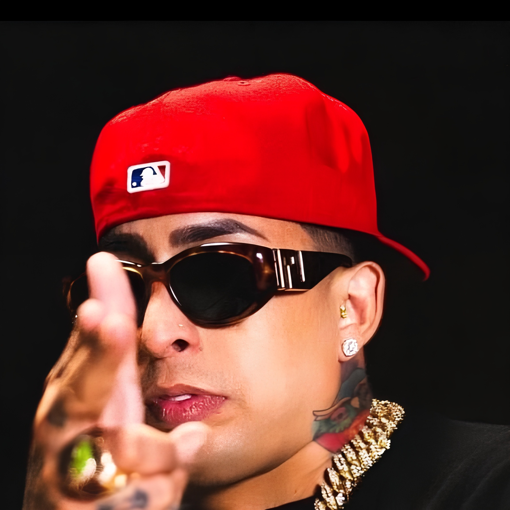

Leyenda del reggaetón y el trap latino.
Ñengo Flow, cuyo nombre real es Edwin Rosa Vázquez, es un cantante y compositor puertorriqueño. Es reconocido por su estilo callejero y por ser una de las figuras más influyentes de la música urbana latina.
| Álbum | Año |
|---|---|
| Flow Callejero | 2005 |
| Real G 4 Life | 2011 |
| El Mundo del Principito | 2015 |
📸 Instagram: @nengoflowofficial
▶️ YouTube: Canal Oficial de Ñengo Flow
🎵 Spotify: Escuchar a Ñengo Flow